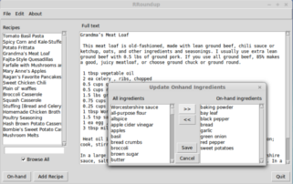
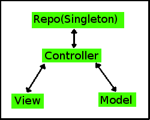

Recipe RoundupThis application was developed for people who love to cook, but hate deciding on what to eat! By allowing the user to select a list of ingredients they already have in their house, the program helps the user ensure that no ingredients are wasted, and perhaps introduces them to recipes they've never tried before! |
A Project Developed in CpSc 3720Summer, 2014by Chris Ragan |
|
|  |
About the ProjectThis project is implemented in Python, using the Tkinter GUI framework. The interface is simple and as intuitive as possible, with the ingredient selection menu mimicking what might be found in a Windows dialog. The program exploits the Model-View-Controller design architecture to compartmentalize functionality and allow more rigorous testing. Loading and saving retentive data uses a Singleton called DataRepo. The recipe and ingredient information is stored in XML format; cElementTree is used to save and load these files. |
 |